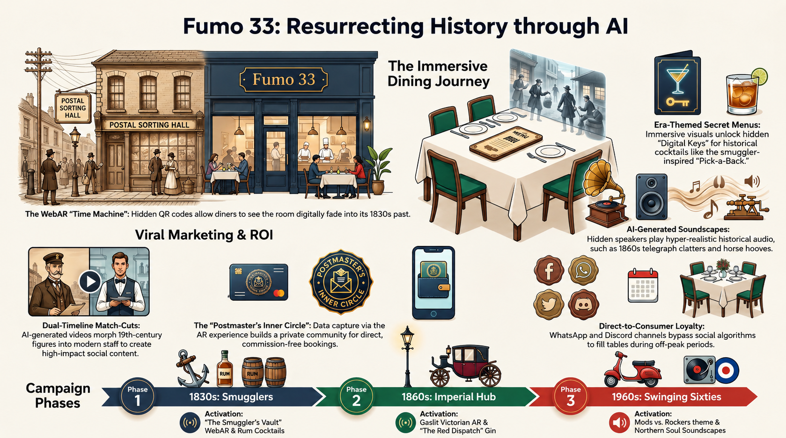

1831
The Smuggler's Vault
Rugged timber, dark iron, and warehouse detailing evoke the era when contraband brandy moved "pick-a-back" up Union Street and Ryde's seafront economy lived in the shadows.
Strategic funding proposal / May 11, 2026
A bespoke heritage parklet for Fumo 33: part civic landmark, part high-street trading platform, part sovereign digital infrastructure for Ryde's next chapter.
Executive summary
Fumo 33 sits at the junction of Ryde's smuggler, imperial, and modern hospitality histories. The proposal turns that position into a visible civic asset: a high-quality Union Street parklet funded as public realm infrastructure, maintained by Fumo 33, and designed to increase dwell time on the High Street.
The parklet is presented as street furniture with a heritage purpose: black iron, timber, planting, warm table light, and a direct visual relationship with the existing Fumo frontage.
Heritage narrative
Rugged timber, dark iron, and warehouse detailing evoke the era when contraband brandy moved "pick-a-back" up Union Street and Ryde's seafront economy lived in the shadows.
Victorian hoop-top railings and post-office cues honour the period when 32-33 Union Street handled dispatches connected to Queen Victoria at Osborne House.
The layout remains scooter-adjacent and social, acknowledging the Union Street energy of the Mod years, Vespas, youth culture, and early heavy music lineage.
Technical and regulatory compliance
The scheme is framed around national guidance and Isle of Wight Council expectations from the start, reducing avoidable objections and keeping the funding conversation focused on civic value.
Section 171 structural install allowance, with the 2026 pavement licence fee built into the budget.
Impact-rated planters, wheel stops, and retroreflective bollards protect diners on the one-way system.
A 12.7mm flush-threshold transition supports wheelchair users, pushchairs, and accessible service.
Structural calculations follow BS EN 1991-1-4 expectations for Solent wind exposure and storm events.
Vectis ONE integration
The digital layer keeps the public realm investment measurable, marketable, and distinctive. It makes the parklet more than extra tables: it becomes a live testbed for Ryde's heritage economy.
QR codes in the Victorian railings let diners peel back Union Street and see an AI-generated 1862 Post Office sorting hall overlaid on the present-day frontage.
A scannable Postmaster's Seal unlocks era-themed drinks such as The Pick-a-Back Rum, creating a reason to share, return, and trade up.
Local edge-inference sensors monitor footfall and dwell time, giving the Town Council a practical Pride in Place return-on-investment signal.
Turnkey build estimate
The figure below packages the platform, railings, safety, technology, professional sign-off, licensing, and a realistic contingency into one grant-ready project value.
| Component | Specification | Est. cost |
|---|---|---|
| Modular platform | 12m x 2.4m slip-resistant composite deck with adjustable substructure. | £12,000 |
| Bespoke railings | Hand-forged Victorian hoop-top steel with marine-grade coating. | £7,000 |
| Safety hardware | Impact bollards, wheel stops, and DfT-compliant lighting. | £1,800 |
| Sovereign tech | Solar power rig, edge-AI sensors, and WebAR hosting. | £4,500 |
| Professional fees | Structural engineer sign-off, Section 171, and pavement licensing. | £3,200 |
| Contingency | 15% buffer for material volatility and install risk. | £4,200 |
| Total project value | £32,700 | |
Strategic grant justification
The Pride in Place case is strongest when the project is not described as private seating, but as a maintained public-realm investment that improves economic velocity, street confidence, and local skills.
Two passive parking bays become 24 high-spend covers, increasing dwell time and spend density.
Evening dining adds passive surveillance and helps reduce anti-social behaviour in the corridor.
Local colleges can use the WebAR layer as a practical creative technology and tourism module.
Supporting visual evidence
The infographic works best as a supporting board within the proposal, showing how the dining concept, AR narrative, loyalty layer, and campaign phases connect.

Conclusion
By building the Signal Platform, Fumo 33 is not simply adding outdoor covers. It is re-commissioning a historic site as a visual and digital landmark for Ryde's high street future. With approval, the formal costed proposal can be submitted for the June 15 BID 3 / Pride in Place funding window.